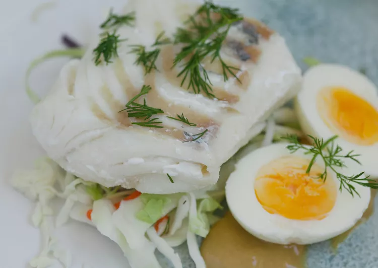

Lutefisk

Description
Lutefisk is cod that was was traditionally dried for storage through the winter. Then when it was time to use it, it was soaked in a mixture of lye and water which rehydrated and softened it.
Ingredients
- 1 pound dried lutefisk
- 1 quart water
- 1 ½ tablespoons salt
- 2 tablespoons butter, melted
Steps
- Bring water and salt to a rolling boil. Add lutefisk and return to a boil. Remove from the heat, cover, and let sit for 8 minutes. Check with an instant-read thermometer to make sure the internal temperature has reached 140 degrees F (60 degrees C).
- Carefully remove lutefisk from water using a scoop strainer or skimmer spoon. Cover with melted butter and serve immediately.
Back to home